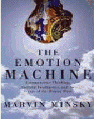
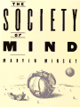

The Emotional Machine

The Society Mind

| Alien Intelligence | Causal Diversity |
|---|---|
| Alienable Rights | Matter, Mind and Models |
| 1971 AI Progress Report | Negative Expertise |
| Telepresence (OMNI) | Internal Grounding |
| BBC Music Interview | Jokes and Cognition |
| More Turing Option chapters | Steps Toward Artificial Intelligence |
| Afterword to True Names | 1970 ACM Turing Lecture |
| Music Interview with Otto Laske | Symbolic vs. Connectionist |